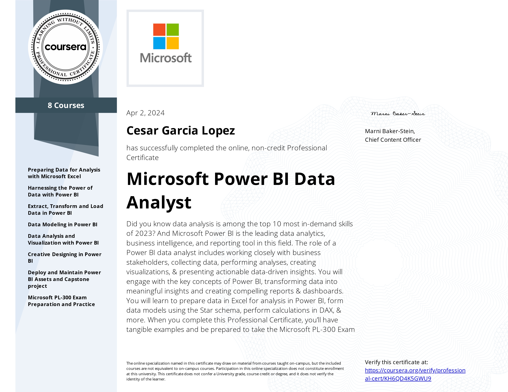

🎓 My Career
Download my curriculum in PDF format.
I am a certified Mechatronics Engineer from the University of Guanajuato and hold a degree in Project Management. Additionally, I completed a data science diploma sponsored by a Santander scholarship in collaboration with BEDU. Currently, I am pursuing a Master’s in Data Science at the Autonomous University of Querétaro.
During my early career years, while seeking to enhance my skill set, I pursued a Lean Six Sigma Green Belt certification course, which lasted approximately 5 months. This intensive program delved into statistical methodologies such as hypothesis testing, ANOVA analysis, multivariate analysis, and more.
Subsequently, I seized an opportunity offered by Santander Open Academy to undertake a Data Science diploma with BEDU, spanning about 7 months. It was during this immersive experience that I discovered my passion for the world of data.
This initial exposure sparked a deep interest in data analysis and interpretation, driving me to explore the field further. Eager to continue expanding my expertise, I sought out new learning opportunities. As a result, I enrolled in another course, once again sponsored by Santander Open Academy in collaboration with BEDU, this time focusing on Cloud Computing with an emphasis on AWS tools. This course spanned approximately 5 months.
Driven by an innate curiosity, I continuously seek new learning opportunities. Among the additional courses I've completed are the Data Scientist Path and Business Intelligence Path both on Codecademy, as well as the Microsoft Power BI Data Analyst Specialization offered by Microsoft and Coursera. Currently, I'm actively working towards obtaining the Tableau Desktop Specialist certification.
My journey reflects a commitment to leveraging data-driven insights to inform decision-making and drive innovation. With a fervent desire to excel in the realm of data science, I'm dedicated to advancing my skills and knowledge to ultimately realize my aspiration of becoming a proficient data scientist.